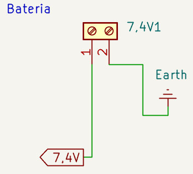
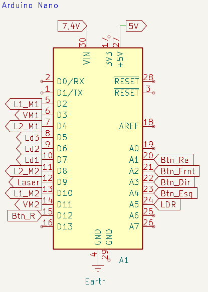
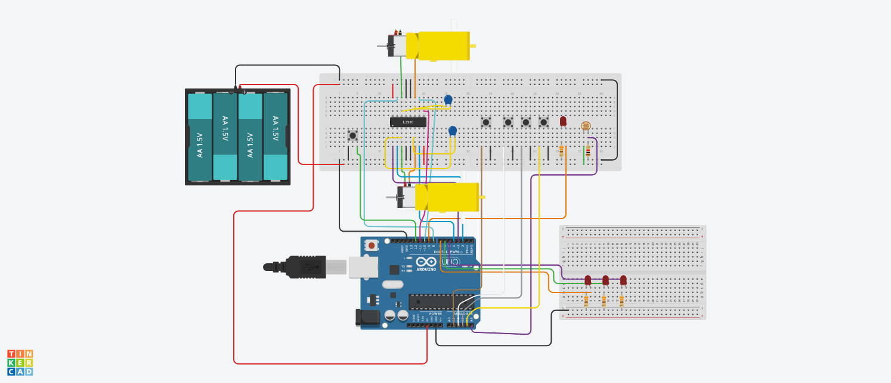
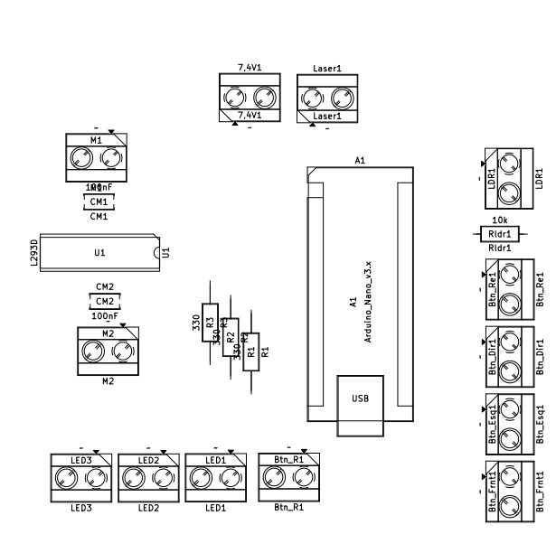
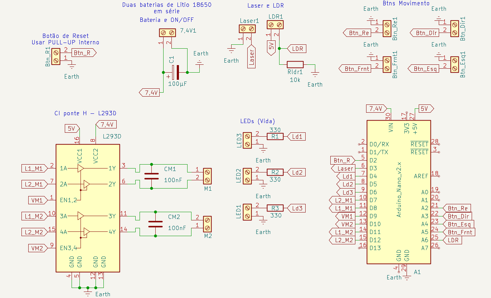

Carregando...
Procurando...
Nenhuma entrada encontrado
Histórico da Placa – Gigantes de MDF
Registro da evolução do esquemático e da PCB do projeto. Cada versão traz o que foi feito, o que mudou e por quê. As versões ficam da mais recente para a mais antiga.
Visão geral
- Microcontrolador: ATmega328P, em um módulo Arduino Nano (16 MHz).
- Driver dos motores: L293D (ponte H em CI, sem shield pronto).
- Alimentação: duas baterias de lítio 18650 em série (7,4 V). A partir da v2.0, também pode ser 4 pilhas alcalinas de 1,5 V em série.
- Ferramenta do esquemático e da PCB: KiCad.
- Simulação: Tinkercad.
Versão 2.0 – 16/10/2026
Nova ligação dos pinos no Arduino Nano e novo projeto da PCB.
Esquemático
Os blocos do L293D, laser, LDR, LEDs e botões seguem os mesmos da v1.0. Mudaram a alimentação e a ligação dos sinais no Arduino Nano.
Alimentação
- O capacitor C1 (100 µF) foi removido.
- A bateria pode ser as 2 baterias de lítio 18650 em série (como na v1.0) ou 4 pilhas alcalinas de 1,5 V em série. Em ambos os casos ela é ligada ao conector 7,4V1.
 Bateria, sem o capacitor C1 |  Ligações no Arduino Nano |
Ligações no Arduino Nano
| Sinal | Pino do Nano | Porta do ATmega328P | Função |
|---|---|---|---|
| L1_M1 | D2 | PD2 | Saída (sentido do motor 1) |
| VM1 | D3 | PD3 | PWM, OC2B (velocidade do motor 1) |
| L2_M1 | D4 | PD4 | Saída (sentido do motor 1) |
| Ld3 | D5 | PD5 | Saída (LED de vida) |
| Ld2 | D6 | PD6 | Saída (LED de vida) |
| Ld1 | D7 | PD7 | Saída (LED de vida) |
| L2_M2 | D8 | PB0 | Saída (sentido do motor 2) |
| Laser | D9 | PB1 | Saída |
| L1_M2 | D10 | PB2 | Saída (sentido do motor 2) |
| VM2 | D11 | PB3 | PWM, OC2A (velocidade do motor 2) |
| Btn_R (reset das vidas) | D12 | PB4 | Entrada com pull-up |
| Btn_Re (trás) | A1 | PC1 | Entrada com pull-up |
| Btn_Frnt (frente) | A2 | PC2 | Entrada com pull-up |
| Btn_Dir (direita) | A3 | PC3 | Entrada com pull-up |
| Btn_Esq (esquerda) | A4 | PC4 | Entrada com pull-up |
| LDR | A5 | PC5 (ADC5) | Entrada analógica (ADC) |
Pinos sem uso: D0/D1 (serial), D13, A0, A6 e A7.
Mudanças em relação à v1.0
| Sinal | v1.0 | v2.0 |
|---|---|---|
| L1_M1 | D8 | D2 |
| L2_M1 | D7 | D4 |
| VM1 | D9 | D3 |
| VM2 | D10 | D11 |
| L1_M2 | D11 | D10 |
| L2_M2 | D12 | D8 |
| Laser | D3 | D9 |
| LDR | A6 | A5 |
| Btn_R | D2 | D12 |
| Btn_Re | A2 | A1 |
| Btn_Frnt | A5 | A2 |
| Ld1 / Ld2 / Ld3 | D4 / D5 / D6 | D7 / D6 / D5 |
| Btn_Dir, Btn_Esq | A3, A4 | A3, A4 (sem mudança) |
Motivo da mudança: Falha da primeira placa e considerações feitas durante o estudo e o desenvolvimento dos requisitos e do programa necessários para o projeto funcionar.
Simulação no Tinkercad
O circuito do Tinkercad (Arduino Uno) corresponde à versão 2.0.

Simulação da v2.0 no Tinkercad
PCB
Layout feito no KiCad, com o Arduino Nano v3.x (A1)
 Posicionamento (antes do roteamento) |  Placa roteada |
Versão 1.0 – 06/09/2026
Esquemático
Primeira versão do esquemático, organizada em blocos.

Esquemático v1.0 (KiCad)
Ligações no Arduino Nano
| Sinal | Pino do Nano | Porta do ATmega328P | Função |
|---|---|---|---|
| Btn_R (reset das vidas) | D2 | PD2 | Entrada, INT0 |
| Laser | D3 | PD3 | Saída |
| Ld1 | D4 | PD4 | Saída (LED de vida) |
| Ld2 | D5 | PD5 | Saída (LED de vida) |
| Ld3 | D6 | PD6 | Saída (LED de vida) |
| L2_M1 | D7 | PD7 | Saída (sentido do motor 1) |
| L1_M1 | D8 | PB0 | Saída (sentido do motor 1) |
| VM1 | D9 | PB1 | PWM, OC1A (velocidade do motor 1) |
| VM2 | D10 | PB2 | PWM, OC1B (velocidade do motor 2) |
| L1_M2 | D11 | PB3 | Saída (sentido do motor 2) |
| L2_M2 | D12 | PB4 | Saída (sentido do motor 2) |
| Btn_Re (trás) | A2 | PC2 | Entrada com pull-up |
| Btn_Dir (direita) | A3 | PC3 | Entrada com pull-up |
| Btn_Esq (esquerda) | A4 | PC4 | Entrada com pull-up |
| Btn_Frnt (frente) | A5 | PC5 | Entrada com pull-up |
| LDR | A6 | ADC6 | Entrada analógica (ADC) |
Pinos sem uso: D0/D1 (serial), D13, A0, A1 e A7.